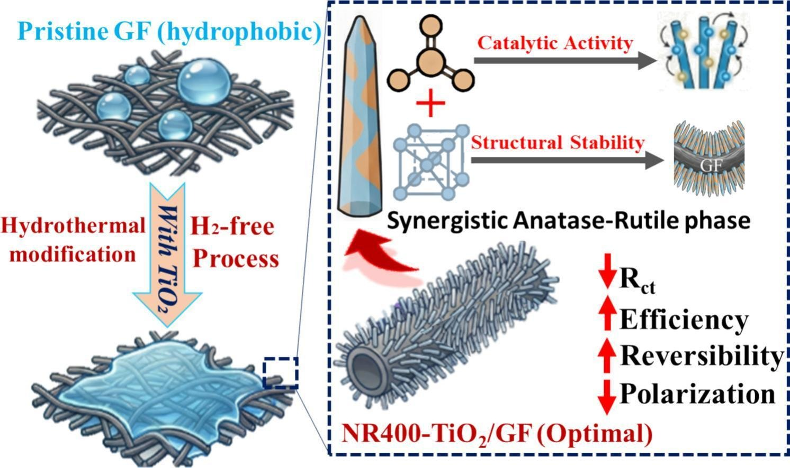

International Journal Publication
Coupled morphology and phase regulation of in-situ grown TiO2 nanostructures on graphite felt for enhanced redox kinetics in vanadium redox flow batteries
Author affiliations and roles
- aChang Gung University
- bHong Kong Polytechnic University
- cChang Gung Memorial Hospital
- dLinkou Chang Gung Memorial Hospital
- eMing Chi University of Technology
Chemical Engineering Journal, 549, 183177 (2026).
Research topic: Redox Flow Batteries
Abstract
The sluggish electrochemical kinetics of vanadium redox reactions on graphite felt (GF) electrodes remain a critical bottleneck for vanadium redox flow batteries (VRFBs). Herein, phase- and morphology-engineered TiO2 nanostructures were directly grown on GF via an in-situ hydrothermal method followed by temperature-controlled calcination. By systematically tuning the precursor concentration, vertically aligned one-dimensional TiO2 nanorods (NR-TiO2/GF) were identified as the optimal morphology, providing continuous charge-transport pathways, accelerated electrolyte penetration, and abundant accessible active sites. Subsequent thermal modulation (300–600 °C) revealed that annealing at 400 °C (NR400-TiO2/GF) yielded fine nanorods with an average diameter of ~128 nm while achieving an optimal balance between high crystallinity and a synergistic anatase/rutile heterojunction. The refined nanorod architecture, coupled with surface hydroxyl functionalities and Ti3+-associated oxygen vacancies, significantly expedited interfacial charge redistribution and lowered charge-transfer resistance to Rct = 1.89 Ω. Furthermore, NR400-TiO2/GF exhibited superior redox reversibility across both half-cells, accelerated mass transport, and effective suppression of parasitic hydrogen evolution. In full-cell VRFB tests, the NR400-TiO2/GF electrode delivered remarkable energy efficiencies of 85.8% at 80 mA cm−2 and 83.7% at 100 mA cm−2, outperforming pristine GF and benchmark metal-oxide modifications while shielding the carbon fibers against oxidative corrosion. This work establishes a clear morphology, phase, and performance relationship, providing a potentially scalable strategy for engineering low-dimensional mixed-phase metal oxides toward high-performance energy storage systems.
Highlights
- Phase-engineered TiO2 nanorods were directly grown on graphite felt electrodes.
- Mixed anatase–rutile phases enhanced interfacial charge-transfer kinetics.
- Hydrogen-free TiO2 modification achieved stable superhydrophilicity.
- NR400-TiO2/GF delivered 85.8% energy efficiency at 80 mA cm−2.
Graphical Abstract
